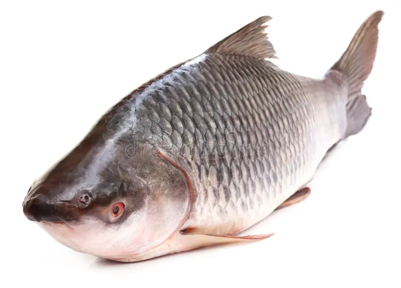
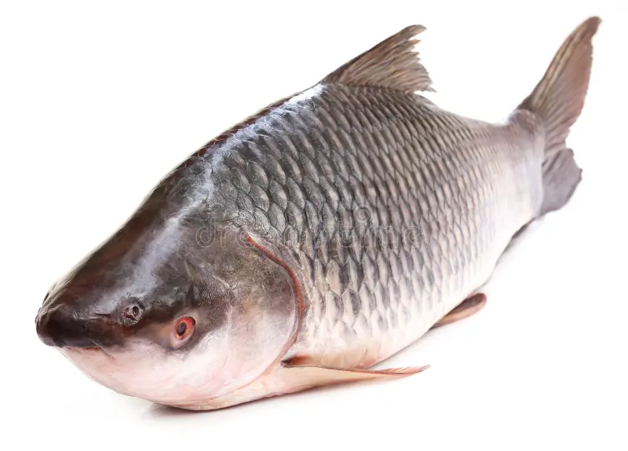
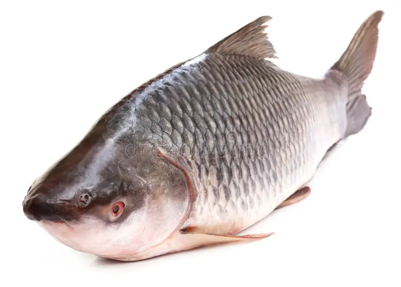

రోహు చేపల ఉష్ణోగ్రత పరిధి 22-31°C మధ్య ఉంటుంది

| వ్యాధి | చిత్రం | నయం చేయడానికి ఔషధం | కంపెనీ ఆఫ్ మెడిసిన్ | pH Range |
|---|---|---|---|---|
| బాక్టీరియల్ అంటువ్యాధులు |  |
అమోక్సిసిలిన్, డాక్సీసైక్లిన్, సెఫాలెక్సిన్, సిప్రోఫ్లోక్సాసిన్, క్లిండామైసిన్, మెట్రోనిడాజోల్ అజిత్రోమైసిన్ మరియు ట్రిమెథోప్రిమ్ |
ఫైజర్, మెర్క్ మరియు గ్లాక్సో స్మిత్క్లైన్ | 6.5 to 8.5 |
| కాలమ్నారిస్ వ్యాధి |  |
కాపర్ సల్ఫేట్, అక్రిన్ఫ్లావిన్, ఫ్యూరాన్, టెర్రామైసిన్, నైట్రోఫురాజోన్ మరియు కనామైసిన్ | ఎరిత్రోమైసిన్ and టెట్రాసైక్లిన్ | 6.7 to 8.6 |
| ఏరోమోనియాసిస్ |  |
ట్రిమెథోప్రిజం-సల్ఫామెథోక్సాజోల్(TMP-SMX), ఫ్లూరోక్వినోలోన్స్, రెండవ మరియు మూడవ తరం సెఫాలోస్పోరిన్స్ |
విర్బాక్, జియోటిస్ మరియు బేయర్ | 6.5 to 8.5 |
| డ్రాప్సీ వ్యాధి |  |
మార్డెల్,xMaracyn® 2 and KanaPlex™ | ఫైజర్, నోవార్టిస్ మరియు ఆస్ట్రాజెనెకా | 6.5 to 8.5 |
| వ్యాధి | చిత్రం | నయం చేయడానికి ఔషధం | కంపెనీ ఆఫ్ మెడిసిన్ | pH Range |
|---|---|---|---|---|
| ఫంగల్ ఇన్ఫెక్షన్లు |  |
మరాసిన్, ఇచ్-ఎక్స్, ఉప్పు, నోవా-జైమ్ ఎఫ్ | ఫార్మాలిన్, మలాకైట్ గ్రీన్ మరియు ఫైజర్ | 6.7 to 8.6 |
| శ్వాసకోశ అంటువ్యాధులు |  |
లైసోజైమ్, మైలోపెరాక్సిడేస్ మరియు ఏరోమోనాస్ హైడ్రోఫిలా | న్యూట్రా రెస్పిరో మరియు టెట్రాసైక్లిన్ | 6.5 to 8.5 |
| కోల్డ్ వాటర్ వైబ్రియోసిస్ |  |
లైసోజైమ్, మైలోపెరాక్సిడేస్ | బాక్టీరియోఫేజెస్ మరియు ప్రోబయోటిక్స్ | 6.5 to 8.5 |
2023 ఆక్వాకల్చర్ ఉష్ణోగ్రత వ్యాధులు
chromeలో మా వెబ్సైట్ని అనుసరించండి